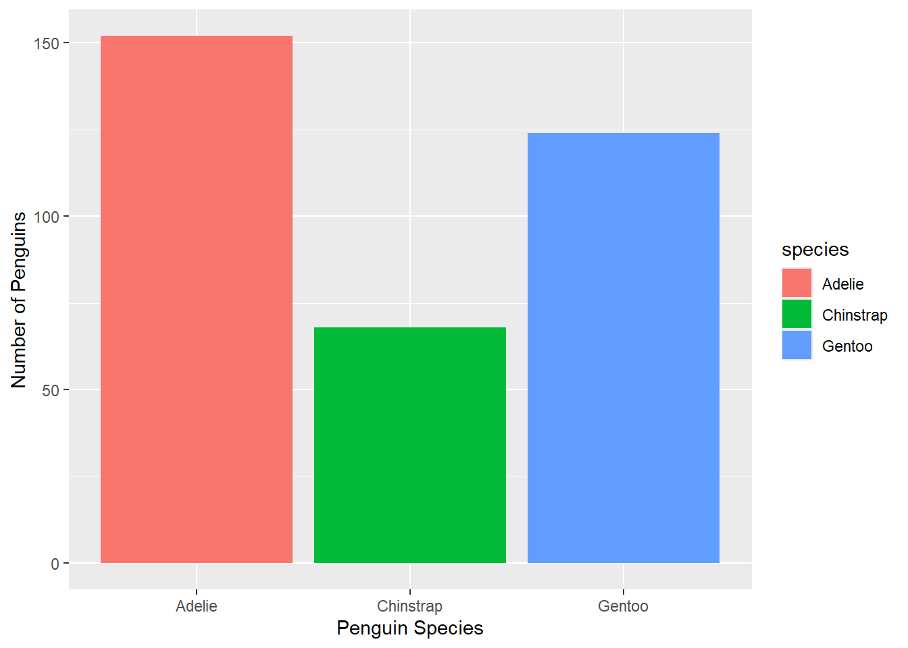
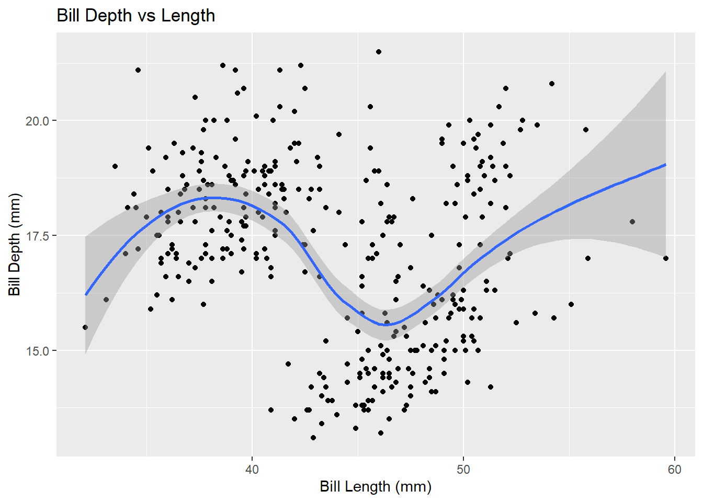
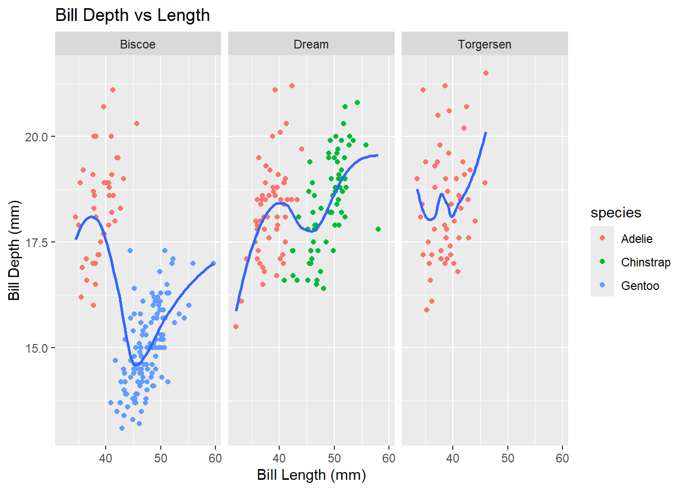

PA 3: Using Data Visualization to Find the Penguins
Author
Jhoana & Bianca
Today you will be exploring different types of visualizations to uncover which species of penguins reside on different islands.
This task is complex. It requires many different types of abilities. Everyone will be good at some of these abilities but nobody will be good at all of them. In order to solve this puzzle, you will need to use the skills of each member of your group.
Some advice: If you aren’t sure how to make a specific plot or how to customize a look over the class text for this week and make use of the ggplot2 cheatsheet.
Groupwork Protocols
During the Practice Activity, you and your partner will alternate between two roles—Developer and Coder.
When you are the Developer, you will type into the Quarto document in RStudio. However, you do not type your own ideas. Instead, you type what the Coder tells you to type. You are permitted to ask the Coder clarifying questions, and, if both of you have a question, you are permitted to ask the professor. You are expected to run the code provided by the Coder and, if necessary, to work with the Coder to debug the code. Once the code runs, you are expected to collaborate with the Coder to write code comments that describe the actions taken by your code.
When you are the Coder, you are responsible for reading the instructions / prompts and directing the Developer what to type in the Quarto document. You are responsible for managing the resources your group has available to you (e.g., cheatsheet, textbook). If necessary, you should work with the Developer to debug the code you specified. Once the code runs, you are expected to collaborate with the Developer to write code comments that describe the actions taken by your code.
Group Norms
Remember, your group is expected to adhere to the following norms:
Think and work together. Do not divide the work.
You are smarter together.
No cross-talk with other groups.
Getting Set-up
Step 1: Install the palmerpenguins Package
We will be creating visualizations using the ggplot2 package.
For this activity, we will be exploring the penguins data from the palmerpenguins package, which has fantastic documentation with really awesome artwork. So, you will need to install the palmerpenguins package. Run the following code in your console:
install.packages("palmerpenguins")
Step 2: Create a Set-up Code Chunk
Locate the code chunk at the beginning of your document (directly under the YAML).
Name the code chunk setup (with the hashpipe #|)
Specify the code chunk options (with the hashpipe #|) that the messages from loading in the packages should not be included.
Load in the tidyverse or ggplot2 package.
Load in the palmerpenguins package.
Step 3: Accessing the penguins Dataset
I like to tangibly see the data set I will be working with so let’s pull the penguins data into the R environment. Run the code below and you should see the penguins data appear in the top right Environment tab.
data(penguins)head(penguins)
# A tibble: 6 × 8
species island bill_length_mm bill_depth_mm flipper_length_mm body_mass_g
<fct> <fct> <dbl> <dbl> <int> <int>
1 Adelie Torgersen 39.1 18.7 181 3750
2 Adelie Torgersen 39.5 17.4 186 3800
3 Adelie Torgersen 40.3 18 195 3250
4 Adelie Torgersen NA NA NA NA
5 Adelie Torgersen 36.7 19.3 193 3450
6 Adelie Torgersen 39.3 20.6 190 3650
# ℹ 2 more variables: sex <fct>, year <int>
Step 4: Get to Know the Data
What variables are included in these data? What units are the variables measured in? What does each row represent?
We have species which is categorical, island which is also categorical, and bill length by milimeters (mm) which is numerical and bill depth by milimiters (mm) which is also numerical. Each row is a case or a single penguin studied/ looked at.
Making Graphics
In this section you will explore the penguins dataset by creating multiple types of plots. As you are creating you plots, please don’t forget to (1) give your plots reader friendly axes labels, and. (2) follow good code formatting!
Step 5: Barchart
Use ggplot2 to draw a barchart of different species included in the dataset.
ggplot(data = penguins) +geom_bar(mapping =aes(x = species, fill = species))+labs(x="Penguin Species",y="Number of Penguins")

Step 6: Scatterplot
Use ggplot2 to create a scatterplot of the relationship between the bill length (bill_length_mm) and bill depth (bill_depth_mm).
ggplot(data = penguins) +geom_point(mapping =aes(x = bill_length_mm, y = bill_depth_mm)) +geom_smooth(mapping =aes(x = bill_length_mm, y = bill_depth_mm)) +labs(x="Bill Length (mm)",y="Bill Depth (mm)",title="Bill Depth vs Length")
`geom_smooth()` using method = 'loess' and formula = 'y ~ x'
Warning: Removed 2 rows containing non-finite outside the scale range
(`stat_smooth()`).
Warning: Removed 2 rows containing missing values or values outside the scale range
(`geom_point()`).

Step 7: Adding A Categorical Variable
Building off of the plot you made in Step 6, add an aesthetic to differentiate the species of the penguins in the scatterplot by color.
ggplot(data = penguins) +geom_point(mapping =aes(x = bill_length_mm, y = bill_depth_mm, color=species)) +geom_smooth(mapping =aes(x = bill_length_mm, y = bill_depth_mm),se=F) +labs(x="Bill Length (mm)",y="Bill Depth (mm)",title="Bill Depth vs Length")
`geom_smooth()` using method = 'loess' and formula = 'y ~ x'
Warning: Removed 2 rows containing non-finite outside the scale range
(`stat_smooth()`).
Warning: Removed 2 rows containing missing values or values outside the scale range
(`geom_point()`).
Step 8: Adding Another Categorical Variable
Building off of the plot you made in Step 7, add the location of the penguins ( island) to your visualization. There may be more than one method to address this, however, one method will more easily allow you to address the questions below.
ggplot(data = penguins) +geom_point(mapping =aes(x = bill_length_mm, y = bill_depth_mm, color=species, shape=island)) +geom_smooth(mapping =aes(x = bill_length_mm, y = bill_depth_mm),se=F) +labs(x="Bill Length (mm)",y="Bill Depth (mm)",title="Bill Depth vs Length")
`geom_smooth()` using method = 'loess' and formula = 'y ~ x'
Warning: Removed 2 rows containing non-finite outside the scale range
(`stat_smooth()`).
Warning: Removed 2 rows containing missing values or values outside the scale range
(`geom_point()`).

Canvas Quiz
Working together as a team, use the plots you both created to address the following questions on Canvas:
Which species of penguins is represented the least in the penguins data set?
Which species of penguins are found on Biscoe Island?
Which species of penguins are found on Dream Island?
Which species of penguins are found on Torgersen Island?
Color deficiencies can make differentiating groups difficult—what aesthetic could you add to your plot to double encode species?